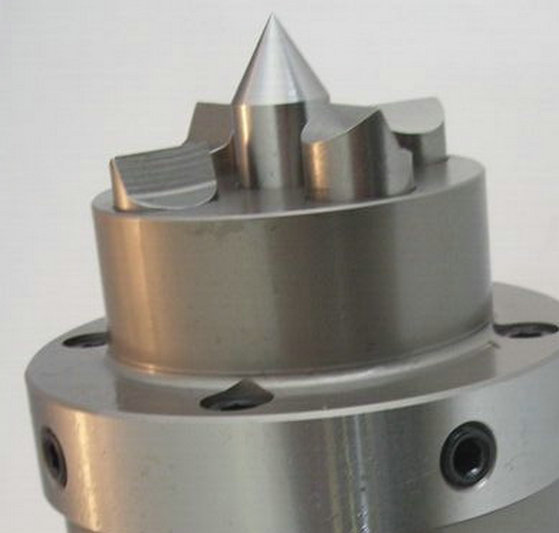
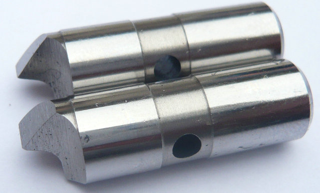
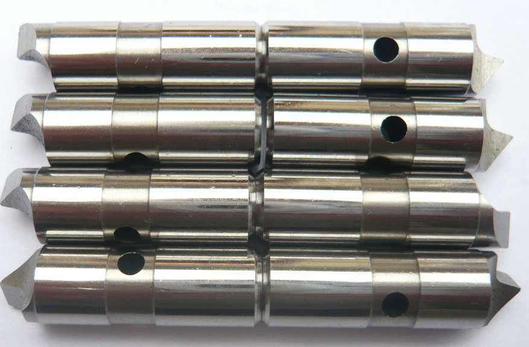
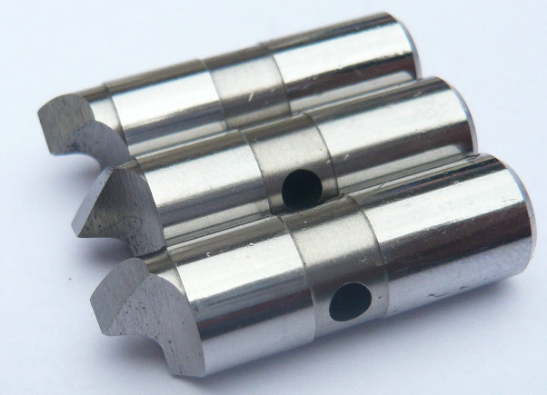

OEM: fliegend gelagerte Mitnehmerbolzen in einem Stirnseitenmitnehmer für klemmen! Lieferant von schwimmende Mitnehmerbolzen für antreiben fräsen-Stirnseitenmitnehmer.
Im Gegensatz zu fest montierten Mitnehmerbolzen verfügen schwimmend gelagerte Antriebsstifte über eine radiale oder axiale Bewegungsfreiheit. Diese Konstruktion erlaubt es, Lageungenauigkeiten des Werkstücks oder leichte Zentrierfehler des Stirnseitenmitnehmers automatisch auszugleichen. Die Folge: Jeder einzelne Bolzen trägt gleichmäßig zur Drehmomentübertragung bei – ohne Überlastung einzelner Zähne.


Unsere beweglichen Mitnehmerbolzen werden aus hochfestem Vergütungsstahl gefertigt und speziell wärmebehandelt (58–62 HRC). Dadurch erreichen sie auch unter schwierigen Bedingungen wie unterbrochenem Schnitt oder bei großen Vorschüben eine lange Standzeit.
In der hochpräzisen Zerspanungstechnik sind Stirnseitenmitnehmer unverzichtbar, um Wellen und rotationssymmetrische Bauteile wirtschaftlich zu bearbeiten. Entscheidend für die Prozesssicherheit ist die Art der Kraftübertragung: Schwimmende Mitne.


Jeder Hersteller von Face Driver verwendet eigene Geometrien für die Aufnahme der Mitnehmerbolzen. Daher bieten wir kundenspezifische schwimmende Mitnehmerbolzen an, die exakt auf Ihr Spannsystem abgestimmt sind. Egal ob Sie Ersatz für einen defekten Originalstift benötigen oder eine ältere Spannzange aufrüsten möchten – wir fertigen nach Zeichnung oder Muster.
Merkmale der schwimmenden Mitnehmerbolzen für Stirnseitenmitnehmer (vollflächig, abgeflacht und versetzt)
| Merkmal | Schwimmende Antriebstifte | Vollbreite-Antriebstifte | Abgesenkte Antriebstifte | Versetzte Antriebstifte | |||||
|---|---|---|---|---|---|---|---|---|---|
| Definition | Selbstjustierender Mechanismus | Maximale Griffigkeitsanordnung | Für kleine Durchmesser | Für große Durchmesser / unebene Flächen | |||||
| Hauptfunktion | Korrigiert Flächenfehler | Maximiert Kontakt & Drehmoment | Erweitert den unteren Bereich | Erweitert den oberen Bereich | |||||
| Design | Jeder Stift schwimmt unabhängig | Symmetrisch, deckt nominalen Bereich ab | Stifte in der Nähe der Mittelachse | Stifte weit von der Achse entfernt | |||||
| Fähigkeit | Automatische Nivellierung, bis zu 5° Neigung oder 3 mm Unregelmäßigkeit | Höchste Antriebskraft (3k–7,8k lbs) | Funktioniert unter dem minimalen Nenn-Ø | Funktioniert über dem maximalen Nenn-Ø / räumt Hindernisse aus | |||||
| Typische Verwendung | Schmiedeteile, Gussteile, sägeschnittige Enden | Schweres Rauen, große Wellen | Schmale Wellen, kleine Präzisionsteile | Große Flansche, Kurbelwellen, Exzenter | |||||
| Genauigkeit | Hoch (0,015–0,02 mm TIR) | Mittel–hoch | Hoch | Hoch (Balance kritisch) | |||||
- home
- products
- contact
- equipments
- offset driving parts
- half offset drive pins
- central driver parts
- standard/ Fixed driving pins
- Lowered drive parts
- clockwise driver pins
- counterclockwise driving parts
- full width drive pins
- Lasting driver parts
- chisel-edged driving pins
- floating drive parts
- power-operated driver pins
- hydraulic driving parts
- mechanical drive pins
- movable driver parts
- fixed driving pins
- carbide driver pins
- tool steel S7 driving parts
- changeable pins
- face drive pins